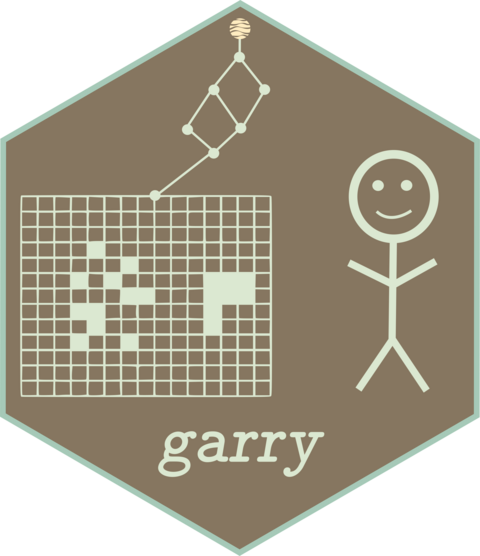

OmniCloudMask model weights
ocm_weights.Rdocm_fetch_weights() downloads garry's mirror of the official
OmniCloudMask v4 weights (two safetensors files, about 58 MB total,
unmodified from upstream; MIT licensed by DPIRD-DMA, see the
release's NOTICE.md for attribution and citation) into a per-user
data directory, verifying each file's content hash. It is
idempotent: files already present and intact are not re-downloaded.
ocm_model() finds this directory automatically, so most users need
nothing beyond a one-off ocm_fetch_weights().
Usage
ocm_fetch_weights(dir = NULL, quiet = FALSE)
ocm_load_weights(dir, models = c("regnety", "edgenext"))Value
ocm_fetch_weights() returns the weights directory,
invisibly. ocm_load_weights() returns a list with weights (one
entry per model), kernel_id, and paths.
Details
ocm_load_weights() is the lower-level loader ocm_model() uses:
it reads the safetensors state dicts, folds batch norms into their
convolutions, and returns the nested weight lists the native forward
pass consumes. Results are cached as an .rds under
tools::R_user_dir("garry", "cache"), keyed by the content hash of
the weight files. Call it directly only to point at a non-standard
weights directory, for example the Python package's download cache
(~/.local/share/omnicloudmask/<version>/).
See also
ocm_model(), ocm_mask() and ocm_predict() for running
the model; safetensors_read() for the underlying file format.